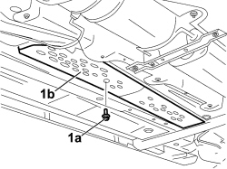
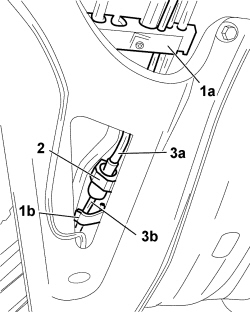
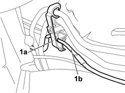
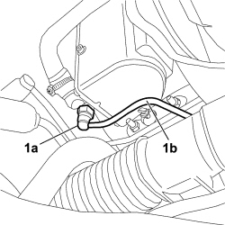

5020M36 FUEL INTAKE HOSE TO INDEPENDENT HEATER UNIT R R
- Path
- Procedures > 50 AUXILIARY UNITS > 5020 HEATER > 5020M SUPPLEMENTARY INDEPENDENT HEATER > 5020M36 FUEL INTAKE HOSE TO INDEPENDENT HEATER UNIT R R
- Kind
- repair procedure (removal / refitting; the operation number is the code)
- Applies to
- engines: 1.9 JTD 8v, 1.9 JTD 16v, 2.4 JTD 20v; all production periods
- Interactive page
- https://sloeber94.github.io/elrnDB-fCrm/en/#/194001934
Applies to: engines: 1.9 JTD 8v, 1.9 JTD 16v, 2.4 JTD 20v; all production periods
- Have a suitable container ready for collecting the residual fuel.
Applies to: engines: 1.9 JTD 8v, 1.9 JTD 16v, 2.4 JTD 20v; all production periods
 Removing
Removing
 Refitting
Refitting- Turn the ignition key to the OFF position.
- Disconnect the negative battery terminal.
Description | Connector | |
|---|---|---|
BATTERY |
Op. 1016A10 SOUND-PROOFING COVER - R.R
Op. 7055B54 UNDER ENGINE PROTECTION/GUARD - R.R.
1. Undo the retaining bolts (1a) and remove the fuel pipe guard duct (1b).

Applies to: engines: 1.9 JTD 8v, 1.9 JTD 16v, 2.4 JTD 20v; all production periods
1. Release the clips (1a) and (1b) retaining the flexible fuel inlet pipe to the additional heater unit.
2. Disconnect the rapid connector using the mounting clips.
3. Disconnect the heater unit flexible fuel inlet pipe (3b) from the intermediate pipe (3a).

Applies to: engines: 1.9 JTD 8v, 1.9 JTD 16v, 2.4 JTD 20v; all production periods
1. Release the mounting clip (1a) and release the flexible fuel supply pipe (1b).

Applies to: engines: 1.9 JTD 8v, 1.9 JTD 16v, 2.4 JTD 20v; all production periods
1. Working on the retaining clips, disconnect the rapid connector (1a) for the flexible fuel inlet pipe (1b) on the heater unit and remove it from the vehicle.

Applies to: engines: 1.9 JTD 8v, 1.9 JTD 16v, 2.4 JTD 20v; all production periods
Refitting
Removing- Connect the flexible fuel inlet pipe to the heater unit.
- Attach the pipe to the mounting clip and secure it to the bodyshell.
- Connect the flexible fuel inlet pipe to the intermediate pipe and attach the pipe to the retaining clip.
- Position the fuel pipe guard duct and tighten the fixing bolts.
Op. 7055B54 UNDER ENGINE PROTECTION/GUARD - R.R.
Op. 1016A10 SOUND-PROOFING COVER - R.R
- Connect the negative battery terminal.
Description | Connector | |
|---|---|---|
BATTERY |